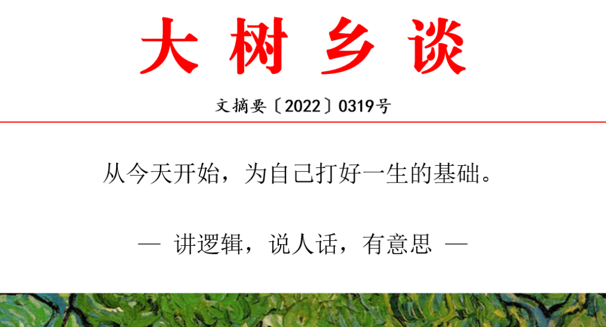
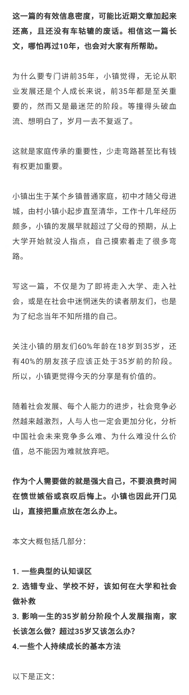
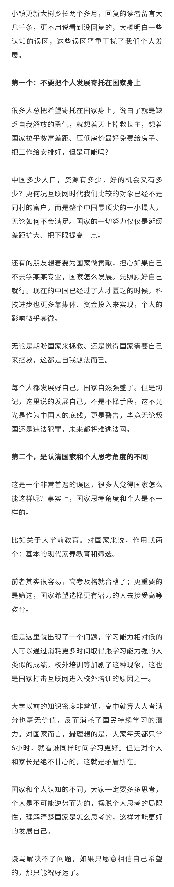
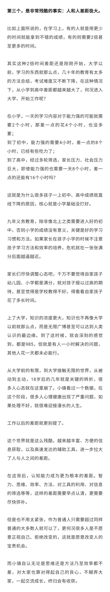
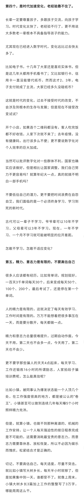
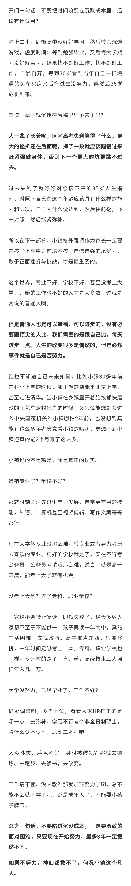
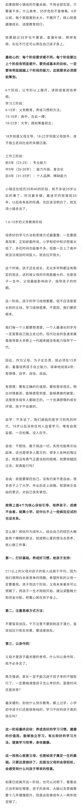
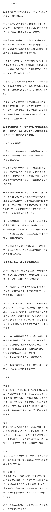
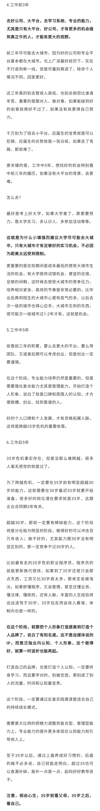
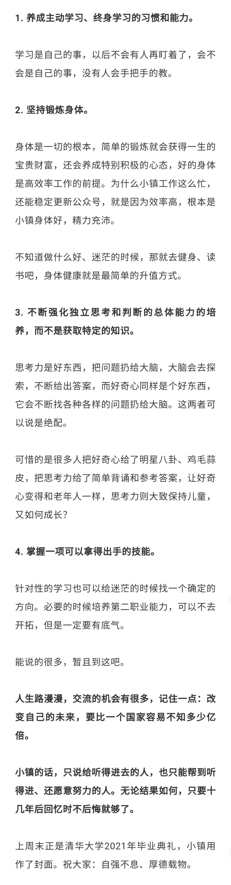

人生前35年的个人发展方法论

本文原发于2021年6月28日，作为一篇付费文章分享。最近经常有朋友留言提到这篇，所以干脆转过来了。
小镇今年36岁了，这一篇是小镇这两年来非常看重的几篇之一，根据小镇和周围很多朋友的人生经验总结而成。虽然过了9个月，本文一些点小镇有了新的思考，但整体思路没变，就暂不做调整，全文截图重发。本次情况比较特殊，毕竟原本发文的账号被所有方收回，这一篇的心血实在不忍放弃，还请曾经付费的朋友们谅解。
过了9个月了，也建议曾经看过这篇的朋友也回顾一下，对比下是否有所变化，当初曾经决定要做的是否坚持下来了？
小镇立志要将持续分享这件事坚持至少20年，根本目的就是希望同大家一起成长，与自己比，努力成为更好的自己。感谢大家的持续关注，从2021年4月到现在，在大家的鼓励和督促下，小镇了解到了更多新知识，文笔也有了很大进步，这就是天天坚持的价值，希望能以小镇的坚持和变化，给大家带去更多坚持的信心。
以下正文。

一、一些认知误区



二、选错专业、学校不好，该如何在大学和社会做补救

三、影响一生的35岁前分阶段个人发展指南



四、一些个人持续成长的建议

其他文章推荐
■ 如何理解中美罗马会晤、国务院金融委会议
如果喜欢，还请点赞、“在看”和关注吧 欢迎分享，让更多人发现“大树乡谈”